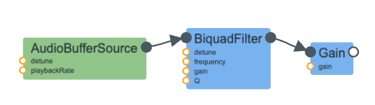

Partner's name for Part I: Luana Liao
The goal of Part I was to translate a SuperCollider program into WebAudio. We had to make a babbling brook sound. The original SC code is a single line:
{RHPF.ar(LPF.ar(BrownNoise.ar(), 400), LPF.ar(BrownNoise.ar(), 14) * 400 + 500, 0.03, 0.1)}.playThere are two branches — the audio signal path and the modulation path:
The main challenge was translating SuperCollider's RHPF into WebAudio.
WebAudio's closest equivalent of SuperCollider's RHPF is the highpass
BiquadFilterNode. However, a different algorithm is used and thus the resonation is not identical.
The rq parameter in SC (0.03) is the reciprocal of Q, so Q = 1/0.03 ≈ 33.
The modulation path was the most interesting yet tricky part. In SuperCollider, arithmetic on audio signals
(* 400 + 500) is built in. However, in WebAudio, multiplication of 400 requries a GainNode and addition requires a ConstantSourceNode.
These are both connected to rhpf.frequency as an AudioParam.
Because SuperCollider and WebAudio is not the same, a perfect translation is not possible. Unfortunately, WebAudio's biquad highpass behaves differently from SuperCollider's RHPF. I tried my best through tweaking the paramters such as the RHPF type to 'highpass', 'bandpass' or 'peaking,' yet none of them produced an identical sound to the example. Still, 'highpass' seems to fit the most.
Because it was raining as I was working on this assignment, I decided to make raindrop sounds. I used advice from Farnell's description of rain as a stochastic process in Designing Sound. I especially focused on capturing not only the light rain drops , but also the occasional heavier raindrops.
The synthezier has 3 main parts: start/stopRain that manage the AudioContext lifecycle, createDrop that builds the signal chain for one raindrop, and scheduleDrops which instructs the program on when to make the airdrop audible.
The master gain node, rainGain, is created in startRain and all the drops connect to that one.
createDrop(time, frequ, decay, amp)
Every single raindrop is its own signal chain: white noise -> bandpass filter -> gain envelope -> rainGain -> Destination.
I chose to use a white noise burst instead of brown noise because raindrops are sharp and distinct, not smooth.
The bandpass filter gives each drop its unique "tink" character. The filter only lets through a narrow range of frequencies through; if the white noise going in has all frequencies, the bandpass selects just a selective group. By doing this, the user only hears one focused sound. I added variety to the rain drops since the frequency is different for each (randomized in scheduleDrops function). Consequently, some drops are clear and glassy, while others are dull. If I had not added the bandpass filter, not only would each drop be a short burst of hisses, each would also sound identical.
Next, for the gainEvelope, I added both setValueAtTime(amp, time) and exponentialRampToValueAtTime(0.0001, time + decay) so that we create a sharp attack, then drop the volume to near zero over a set time of seconds.
This allows each drop to sound distinct, instead of something continuous. I used exponential decay, not linear since a sound raindrop doesn't decrease linearly.
scheduleDrops()
This function runs every 80ms.
This is where we make sure raindrops consist of 2 types: light and heavy.
Light raindrops fire 3 at a time, each with a random delay (mimicing how raindrops actually fall onto the ground). The frequency and amplitude are randomized for each raindrop, thus making a constant, yet natural background patter of raindrops.
Heavy raindrops are fired only 30% of the time. This is because in real life, the heavier drops are ocassional interruptions on top of a background of light drops. Their frequency is lower, the decay time is longer and louder.
Overall, the randomization of all parameters is what makes the result feel more natural, not looped.

The image above shows the signal flow graph for a single raindrop. Many of these chains are running simultaneously since rain is composed of individual raindrops.